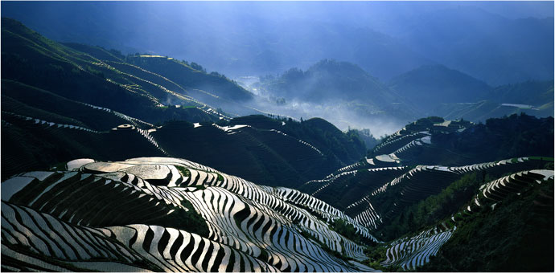
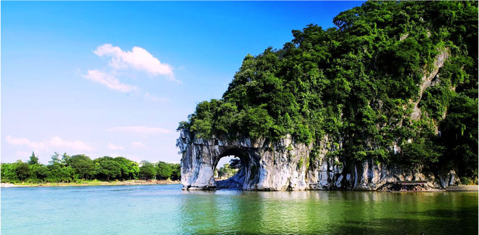
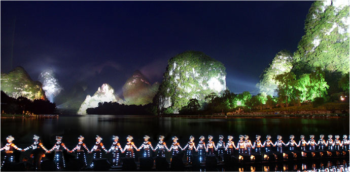
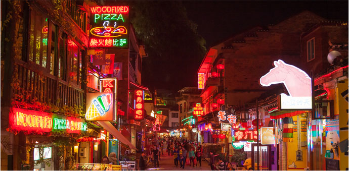

-
灕江景區
灕江發源於廣西桂林，江岸風光明媚，山青、水秀、洞奇、石美，四絕令人印象深刻，尤以桂林－陽朔段最為迷人，而有「桂林山水甲天下，陽朔山水甲桂林。」之名言佳句美傳數百年，讓灕江景區也被列為中國5A級旅遊景區。
灕江沿岸景點眾多，乘著竹筏或遊船遊覽，最精華的就屬楊堤到興坪一段，順流而下，兩岸是望夫石、冠岩、石人推磨、浪石村、九馬畫山、老村頭、黃布灘等，山巒層層疊疊，田野錯落分布，還有老村莊靜立在一旁，共同構築出灕江印象。而當你遊到接近興坪的黃布灘，不妨拿出20元人民幣來瞧瞧，紙幣上黃布倒影的綺麗美景就呈現在眼前。
此外，三、四月的灕江，煙雨濛濛，如中國山水畫般揮灑著濃淡墨色，是一種無法言喻的意境美，不少遊客也會專程前來感受。
   -
龍脊梯田風景名勝區
廣西壯族自治區龍勝縣境內的龍脊梯田風景名勝區，以大面積的壯秀梯田美景聞名，並獲有「世界梯田之冠」的美譽，這座梯田依循著龍脊山脈耕闢，層層疊疊，彎彎曲曲，從山腰到山巔，錯落蜿蜒在山邊，春天水溉田疇如掛銀帶，夏天新禾翻浪生綠波，秋天稻結金穗疊金塔，冬若覆雪則砌白玉磚，氣勢萬千。
龍脊梯田的分布約落在海拔300~1100公尺，由於面積廣闊，因此劃分出三大主要景區－龍脊古壯寨梯田、平安壯族梯田、金坑紅瑤梯田，這些景區內都有壯族、瑤族等少數民族聚居，他們沿山建起的村寨極具特色，旅客也可順訪村寨，欣賞歌舞表演，感受壯族、瑤族的民俗風情。
沒有付出，哪來收穫？想站到最佳視野觀景台眺望浩蕩無垠的梯田美景，旅客勢必要穿過村寨，攀過層層階梯登上制高點，當然也可以偷吃步花大錢請當地挑夫載你一程，一旦抵達制高點，看梯田的曲折縈紆展現著柔美，蔓延堆疊則帶來磅礡恢弘，這樣的壯麗讓付出的一切都值得了。
-
象鼻山
象鼻山因臨水側的山形酷似一頭大象於河邊垂鼻飲水而得稱，它就位在廣西桂林國家4A級景區──象山景區之內，坐立灕江和桃花江交匯之處，因其經典的形象而被視為桂林市城徽。
造型特殊的象鼻山，有幾處知名的景點，象鼻與象體間的洞隙有如一輪滿月，清澈江水流過，倒映出雙月奇景，被稱作水月洞；而在象體山腰的部分也有一岩洞，因正巧是象眼的位置，而有象眼岩之稱；另外在山頂上還有一座狀似劍柄的普賢塔。
這裡有不少古老傳說流傳，最為人傳頌的就是神象傳說，相傳古時候玉皇大帝與坐騎神象下至凡間到桂林，但神象被桂林美景吸引不願返回，私自到灕江岸邊飲水，玉帝一怒之下便拔出腰間寶劍刺向神象，神象遂石化成山，而寶劍露出的劍柄則變成寶塔一座。而今，當地旅遊以這些神話傳說為基礎，推出改編的奇幻山水夜間燈光秀《象山傳奇》，帶給觀眾一場科技與自然、文化結合的視覺饗宴。
-
印象·劉三姐
張藝謀所執導的印象系列中，首部推出的正是於廣西桂林陽朔灕江水域演出的《印象．劉三姐》，這是全球第一部投入全新概念的大型實景演出，沒親身到過這裡，你無法想像眼前所見的江岸都成為演出的舞台，更別說數百名參與演出的工作人員中，除了部分專業演員，絕大多數都是當地漁民、偏遠山村的侗族歌手和少數民族的姑娘，《印象．劉三姐》不僅融入自然風光，也成功的展現民族風情。
一名女子從山水美景的彼岸，哼著一曲《山歌好比春江水》出場，她是壯族傳說中的歌仙──劉三姐，緻麗風光伴隨著動人歌聲，為整場秀正式揭開序幕。這齣長約60分鐘的歌舞秀是由一連串視覺、聲音及人物印象所拼疊，紅色是歌、綠色是家園、金色是漁火、藍色是情歌、銀色是盛典，畫面的安排時而唯美，時而浩大，震撼人心。
《印象．劉三姐》不落俗套，裡頭沒有雋永的愛情故事，只有當地人民生活和地景風光的呈現，但透過聲光效果和盛大排場，卻能帶給觀眾無數感動。
-
陽朔西街
陽朔西街是廣西陽朔縣城內最古老的一條街道，它緊靠著灕江，散發著古典雅致的文化風情，早在1970年代就吸引無數歐美遊客到訪，讓它獲得了洋人街的稱號，而今這裡開設許多商家店舖，食衣住行育樂通通有，但特別的是大多數都懸掛著中英對照的招牌，而裡頭的店員也都是說英文也會通，展現出中西合併風格。
越夜越熱鬧的陽朔西街全長不過數百公尺，卻進駐許多餐館、飯店、酒吧、咖啡廳、藝品店、雜貨舖等商家，每間商家各有特色，浪漫、復古、現代，或是歐美風、中國式、小清新等等，相當有意思，一應具全的吃喝玩樂帶來廣大觀光人潮，時不時看到西方面孔也不意外，不少外國歷史名人可都遊過這條街。
